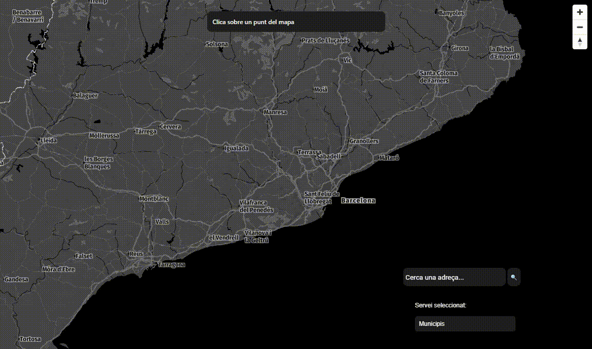
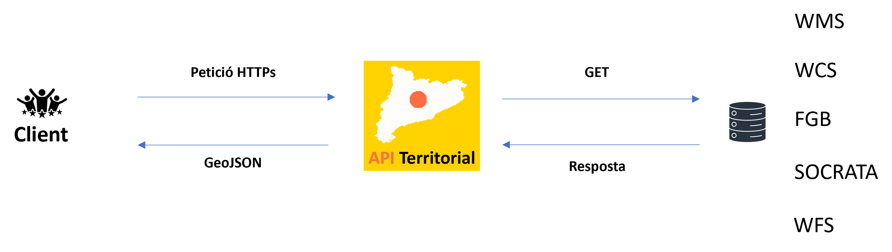

API Territorial
versió 1.0.0
Què és?
Benvinguts a l'API Territorial de l'ICGC, una Interfície de Programació d'Aplicacions (Application Programming Interface) que consisteix en una eina que integra diverses fonts de dades geogràfiques per proporcionar-te informació precisa i detallada del territori a partir d'unes coordenades geogràfiques o UTM.

Com funciona?
Es tracta d'una API REST que funciona a partir d'un protocol HTTPS. Es basa tot en un motor de cerca que gestiona les peticions (segons el format) i realitza la connexió amb la base de dades o la consulta corresponent al servei WMS/WFS/WCS, i dona com a resposta una col·lecció en format GeoJSON.

Envia un parell de coordenades del territori de Catalunya i la nostra API et retornarà un GeoJSON amb els serveis que intersecten amb aquestes ubicacions. Les peticions es poden personalitzar amb el paràmetre 'servei', permetent-te seleccionar-los tots (all), o seleccionar serveis específics pel seu nom (separats per coma).
Casos d'ús
- Explora el territori a la teva manera: descobreix dades detallades sobre municipis, comarques o altres serveis, i visualitza-les en un mapa interactiu.
- Comprèn el paisatge amb detall: analitza la distribució de la vegetació, la topografia i d'altres característiques geogràfiques en una àrea específica.
- Planifica el futur de les zones urbanes: accedeix a dades sobre usos del sòl, vegueries i d'altres serveis per a una planificació urbana informada.
- Gestió forestal: visualitza dades sobre incendis i vegetació a Catalunya per a una correcta planificació i gestió forestal.
- Gestió de recursos hídrics: planifica i monitora els recursos hídrics amb dades essencials sobre aqüífers i conques hidrogràfiques.
- Navegació intuïtiva pel teu entorn: utilitza la informació detallada del Sistema d'Orientació Cartogràfica per explorar i orientar-te amb facilitat.
- Anàlisi de salut pública: utilitza les "Àrees Bàsiques de Salut" i les "Regions Sanitàries" per aprofundir en anàlisis epidemiològiques i planificació de serveis de salut.
- Planificació del territori per a serveis socials: empra les "Àrees Bàsiques de Serveis Socials" per analitzar la distribució de serveis socials i identificar àrees amb necessitats creixents.
- Seguretat pública i policial: utilitza les "Àrees Bàsiques Policials" per a la planificació de recursos policials i la identificació de zones amb necessitats especials de seguretat.
- Gestió hidrològica detallada: explora les "Subconques hidrològiques" per a una gestió més precisa dels recursos hídrics a nivell local.
- Anàlisi de dades cadastrals: utilitza les "Parcel·les cadastrals" per a l'anàlisi detallada de la propietat del sòl i la planificació del desenvolupament urbà.
Exemples
A la secció API-Examples proporcionem demostracions pràctiques per ajudar-te a connectar-te a l'API i fer peticions. Això facilita la implementació ràpida i eficient als teus projectes.
Documentació
Explora la secció API-Docs per veure i testejar tots els serveis i mètodes disponibles. Amb una interfície intuïtiva, podràs comprendre fàcilment com utilitzar cada servei i personalitzar les teves peticions.
Visualització en temps real
A la secció API-Viewer pots veure el funcionament de l'API en temps real. Selecciona qualsevol servei en un desplegable i visualitza'l fàcilment fent clic sobre el mapa interactiu.
Llicència
Dades de l'ICGC: Llicència de Reconeixement 4.0 Internacional de Creative Commons. Més informació
Dades d'altres administracions: Enllaç
Versionat
Versió 1.0.0
Autor i Contacte
Unitat Geostart, Institut Cartogràfic i Geològic de Catalunya.